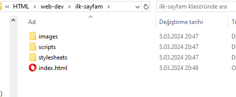
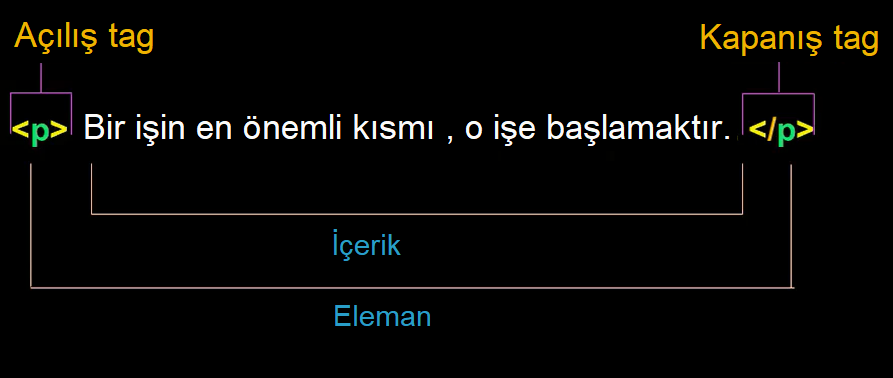

Bu yazıda web yazılım geliştirmeyi öğreneceğiz ama çok çok başlangıçtan girmeyi düşündüm. Mesela evren bir toz bulutuydu gibi.. Web geliştirme nasıl yapılır merak ediyorsanız ve azcık bilgisayar kullanma ve internette gezinme tecrübeniz varsa siz de başlayabilirsiniz.
Baştan başlayacağız dedik ama az bir şey de görmeyeceğiz. Eğer yazıyı bitirmek nasip olursa şunları göreceğiz:
Birçok kişi web ve internet kelimelerinin aynı anlama geldiğini düşünür. Aslında alakalı olmalarına rağmen farklı anlamları vardır. Web (yani World Wide Web) internette gezerken karşımıza çıkan web sayfa ve sitelerinin oluşturduğu yapıdır. Internet ise dünya genelinde bilgisayarların birbirine bağlandığı dev ağ'ın (network) adıdır. Web , internete bağlı bilgisayarların paylaştığı veri oluyor. Tarayıcınız aradığınız web sayfasına ulaşmak için internet'i kullanıyor.
Yukarıda basitçe resmedilmiş olarak bilgisayarların internette nasıl birbirine bağlandığı görülüyor. Elinizdeki bilgisayar , cep tel veya tabletler Chrome , Firefox vs tarayıcı programlar yardımıyla internet ağı üzerinden Server adı verilen bilgisayralara bağlanıyor ve bilgi alış verişinde bulunuyor.
Burada bilgiyi talep eden sizin tarafınızdaki bilgisayarlara Client (müşteri) denir. Bilgiyi hazırlayıp size cevap olarak gönderen bilgisayarlara da Server (hizmet veren) denir.
Aslında olayda karmaşık bir yan yok, basit düşünmek lazım. Bir ağ var ve buna bilgisayarlar bağlı. Herkesin ağda bir adresi var. Sizin bilgisayraınızın internet ağında adresini öğrenmek isterseniz Google'a "ip adresim ne" diye arayın ve kolayca öğrenin. Client-Server arasında iletişim de 2 tane fiziksel adresi belli bilgisayarın belirlenen bir protokole göre birbiriyle veri alışverişinde bulunmasından ibaret.
Peki tarayıcı adres kısmına isim yazıyoruz, o nasıl server adresini biliyor? derseniz, o iş için olan DNS (Domain Name Server) server'lar da var internete bağlı. Bilgisayarınızdaki tarayıcı onların adresini ezbere biliyor ve gidip onlara soruyor "www.bilmemne.com.tr" nerede diye. Zaten ilk geliştirenler de internetin bu kadar geniş kitlelerin kullanacağı bir şey olacağını düşünmemiştir, sanmam. Onlar sadece üniversiteler arası yazıları falan paylaşmak üzerine belkide sadece düz yazı verisi kullanan bir yapı hazırladılar.
Tarayıcıdan bir adres girip gitmesini istediğimizde ya da zaten açık olan bir sayfada bir bağlantıyı tıklayıp başka sayfaya geçmesini istediğimizde client olan bizim tarayıcı programımız server'a bir bilgi gönerir. Client tarafından server'a yapılan bu bilgi gönderme işine istek (request) denir. Server bu isteğe göre size sunulacak bilgileri web sayfası kodu hazırlar ve cevap (response) olarak döner. İşte buna client-server iletişimi denir.
HTTP internette client-server haberleşmesinde kullanılan haberleşme protokolünün adı. HypexText Transfer Protocol cümlesinden üretilmiş. Aslında Hypertext bağlantı (ya da köprü) metni gibi bir anlama geliyor. İşte bu yüzden ben başlangıçta web sisteminin sadece yazıları paylaşmak üzere üretilmiş olduğunu düşündüm.
Web sayfaları bu protokole uygun yapıdaki HTML (Hypertext Markup Language) kodları ile kodlanmıştır. Protokol kelimesi ağ haberleşmesinde uyulması gereken kuralları belirten bir set. Bir ağ üzerinden bağlı bilgisayarların iletişimi için yüzlerce protokol yazılmıştır ama http bunların en yayılmış olanlarından biri ve artık bütün dünya bunu kullanıyor. Bilgisayarların haberleşmesi için TCP ve FTP (dosya transferi için kullanılır) gibi diğer amaçlarla kullanılan yaygın protokoller de vardır.
Http protokolü başlangıcında web tarayıcınız bir istekte bulunarak işlemi başlatır. Server bu isteğe uygun cevabı hazırlar ve cevap olarak gönderir. Bu yüzden http bir request-response client-server protokolü olarak bilinir. Tüm web sayfalarını gezerken böyle küçük küçük istek-cevap işlemleri defalarca yapılarak o koca sayfalar önünüze gelir.
Web tarayıcıları bilgisayarınızdaki internet üzerinden web sitelerini görüntülemek için kullandığınız programlar. Eğer web geliştirici olmayı düşünüyorsanız, yaptığınız şeyleri test etmek için en azından bunların yaygın olan bir kaçını bilgisayarınıza yükleyip yazdığınız kodların sonucunu değişik tarayıcılarda görmeniz gerekir.
En çok kullanılan tarayıcılardan biri Google Chrome . Bu tarayıcı aynı zamanda web geliştiriciler için bir çok yardımcı araç da sağladığı için sisteminize yüklemenizi tavsiye ederim. Ben Opera kullanıyorum, Chrome eklentileri de yüklenebildiği ve hafif olduğu için tercihim. Bir diğer çok kullanılan tarayıcı Mozilla Firefox. Bunlar dışında işletim siteminizle beraber yüklenen Microsoft Edge, Internet Explorer ve Safari de yaygın kullanılır.
API kelimesi Application Programming Interface kelimeleri baş harflarinden üretilmiş. Web teknolojisi geliştikçe işler karmaşıklaşmaya başladı. Örneğin sosyal ağlar (Facebook, X, Instagram vs) için artık cihazlarda ayrıca uygulamalar yükleniyor. Bunların server ile iletişimlerinde karmaşıklık arttıkça ortaya yeni bir ihtiyaç çıkmış. Server'da bir uygulama var, client'da bir uygulama var, bunların arasında veri taransferini kolaylaştırmak için arayüz denilen kodlar hazırlanmış ve bunlara API adı verilmiş. Kısacası API iki uygulama arasında iletişimi kolaylaştıran kodlar.
Örnek olarak :
Sosyal API'lar:
Görsel API'lar:
API bir ulak gibi düşünülebilir, bir kişiden aldığı mesajı diğer bir kişiye ulaştırıyor ve onun cevabını geri getiriyor. Bir örnek olarak bir restorana giderseniz, siz müşterisiniz ve isteğiniz mutfaktaki personel tarafından hazırlanıyor. API burada garson olacaktır. Siz menüye bakıp garsondan istekte bulunursunuz. Garson gider isteğinizi mutfağa bildirir. Mutfaktaki personel isteğinizi hazır ettiğinde garson siparişinizi size getirir. Afiyet olsun..
Bilet bulmak üzerine yapılmış bir sitede siz gideceğiniz yeri seçersiniz, API tüm firmaları gezip olası bilet ihtimallerini toplar server'a getirir ve server size bir cevap sayfası hazırlar.
Web sitenizin kodlamasına başlamadan önce bazı fikirleri kafanızda toplamanız lazım. İleride çok karmaşık şeyler yapacağız ancak şimdilik basitten başlarsak daha iyi anlayacağız. Ne kadar gelişirseniz gelişin, bir web sitesine başlarken şunları mümkünse yazarak belirleyin:
Her ne kadar bilgisayar kullanıyorsak da elinize bir kalem ve kağıt alın, sayfanın neye benzemesini istediğinizin krokisini çizeceksiniz. Bunu en usta yazılımcılar bile yapıyormuş. Ben endüstriyel otomasyon işi yapıyorum ve ekranları tasarlamadan önce , eğer her zaman benzerini yaptığım bir görsel değilse önce mutlaka defterimde karalarım. Bir de mutlaka defter kullanırım, bir kağıda çizersem kesin kaybolur.
Ressam olmaya gerek yok , ilk sayfamız zaten çok basit olacak. Diyelim şöyle bir şey karaladık:
En üstte bir başlık yazısı var. Altında bir resim var. Resime tıklanınca değişecek. Altında birkaç paragraf yazı ve bir numarasız liste ile bazı bilgiler listelenmiş. Sonra içinde başka sayfalara bağlantılar da olan bir paragraf daha. En altta da kullanıcı ismini değiştirmek için bir buton var. Şimdilik sadece bu kadar, yavaş yavaş bunu elde etmeye çalışacağız.
Varlıklarınız (assets) , web sayfanızı oluştururken size lazım olacak bileşenlerdir. Bunlar :
Şimdi web sitemizde bulunacak dosyaları birbiri ile uyumlu şekilde nasıl yerleştireceğimizi inceleyelim. Bir web sitesi birçok dosyadan oluşur.
Web sitenizi tasarlarken bütün dosyaları bir düzene göre yerleştirip birbirlerine kolayca erişebilir olmalarını sağlamak düzeni korumak için önemlidir. Herşeyin tek bir klasör altında toplanması server'a yüklerken de hakimiyet için faydalıdır. Örnek bir yerleşim şöyle :
Herşeyi içine toplamak için "ilk-sayfam" adında bir klasör oluşturduk. Bu sitemizin root klasörü ve server'da yayınlanacak olan dosyaların ikiz kopyası burası olacak. Resimler için images, script kodlar için scripts ve stil dosyalarımızı koymak için stylesheets adında 3 alt klasör ekledik. En son da sitemizin açılış sayfasının kodunu içeren index.html dosyası ekledik. Şimdilik hepsinin içi boş.
index.html özel bir dosya , bir server'da siz sayfa adresi vermeden bir web sitesini açarsanız, server gider root klasördeki index.html dosyasını size cevap olarak gönderir. Bu yüzden sitenize ilk koyacağınız sayfa index.html olmalıdır.
Bir önemli nokta daha. Dosya ve klasör isimlerini verirken arada boşluk kullanmayın. Web sisteminde dosya ve klasör isimlerinde boşluk sıkıntı yapabilir. Ayrıca web geliştiricilikte genel eğilim boşluk yerine kelimeleri "-" (tire işareti) ile ayırmaktır. Ayrıca her ismi küçük harfle verme alışkanlığı edinin çünkü web'te büyük harfle ve küçük harfle yazılan değerler farklı görülür. Hangi harfi büyüktü diye hatırlamaya çalışmayın hepsini küçük harf yapın.
Sırada kodlarınızı yazarken kullanacağınız bir text editörü uygulama seçmek var. Aslında yazacağımız kodlar düz metin şeklinde olduğu için Windows Notepad uygulaması ile kodlarımızı yazabiliriz. Ancak kod yazmak için özel tasarlanmış uygulamalar hem yazılanı renklendirerek görsel olarak kodun anlaşılmasını kolaylaştırırken size yazım esnasında da yardımcı olacaktır.
En yaygın kullanılan kod editörlerinden bazıları:
Ben editörler içinde yıllardır VSCode kullanıyorum her türlü script programlama dili için eklentileri var. Ayrıca html sayfaları lokal bilgisayarınızda test edebilmeniz için "Live Server" eklentisi çok yardımcı oluyor. Gerçi benzer eklentiler tüm editörlerde var ama ben VSCode editörünü renklendirilmiş kodları bloğuma kopyalarken sağladığı avantajlar yüzünden de çok kullanıyorum. Notepad++ programını da oldukça yoğun kullanırım. Sanırım şu sıralar yazılım geliştiricilerin en popüler editörü VSCode. Bu öğretide ben VSCode ile çalışacağım ancak siz istediğinizi kullanabilirsiniz.
Yavaş yavaş ilk kodumuzu yazmaya doğru geliyoruz. Son öğreneceğimiz şeylerden biri HTML kodunun temelleri. Daha sonra ilk sayfamızın kodunu yazmaya girişebiliriz. Biliyorsunuz root klasöre index.html adında bir dosya koymuşturk. Bu dosyanın içine yazacağımız şey sitemizin ana giriş sayfasının HTML kodu olacak.
HTML Hyper Text Markup Language baş harflerinden oluşan bir kısaltma. Bir web sayfasının yapılanmasını ve içeriğini belirleyen kodlama şeklidir. İçerik başlıklar, paragraflar, resimler, listeler vs. bileşenlerden oluşan ve sayfada duyularımıza hitap eden şeylerdir.
HTML adından anlaşılacağı üzere bir işaretleme dilidir, bir programlama dili değildir. Belli işaretlemeler kullanarak sayfanızın yapısı ve içeriğini belirlerler.
HTML bir dizi elemandan oluşur. Eleman dediğimiz ise web sayfanızın parçalarıdır (ya da bileşenleridir). Elemanlar içeriğin farklı parçalarını sarmalayarak onların davranışı ya da görünümünü düzenlerler. HTML elemanlar web sayfalarının yapı taşlarıdır.
Elemanlar tag adı verilen sınırlayıcılar sayesinde tanımlanır. İçeriğin
başında ve sonunda <isim> ve </isim> şeklinde açma ve
kapatma parçalarından oluşur.
HTML tag'ler web sayfasında duyularımıza hitap eden içerikleri barındırabilir. Ama web tarayıcımız bize bu tag'leri göstermez, sadece tag ismine göre içeriği şekillendirerek bize gösterir.
Anatomi falan biraz havalı oldu. Bir eleman web sayfasının bir parçasıdır. Bir yazı veya bir resim içerebildiği gibi içi boş bile olabilir. Genellikle bir eleman bir açılış ve bir kapanış tag'ine sahiptir. İçerik barındırmayan elemanlara boş eleman denir ve kapanış tag'leri olamz.
Bir HTML elemanın yapısına bakalım.
Temel HTML eleman yapısının parçaları bunlar. Bu bir paragraf (p) elemanı. Açılış tag'i ve kapanış tag'i var. Elemanın sembol isminin "küçüktür" ve "büyüktür" işaretleri arasına yazarak oluşmuşlar. Kapanış tag'inde eleman adından önce bir de "/" işareti konmuş. Tag açılış ve kapanışı arasına da içerik geliyor, örnekte içerik düz bir metin. İçerik , açılış tag ve kapanış tag hepsi birlikte elemanı oluşturuyorlar.
.
.